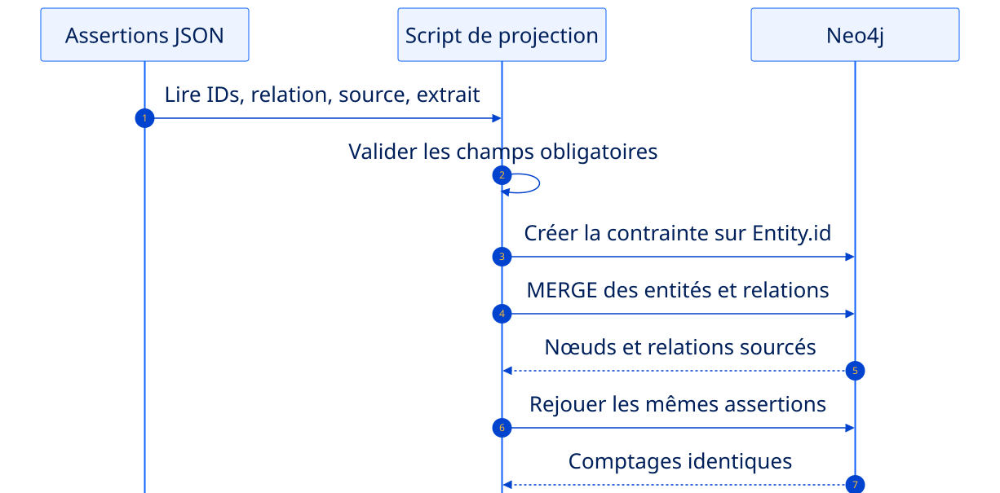
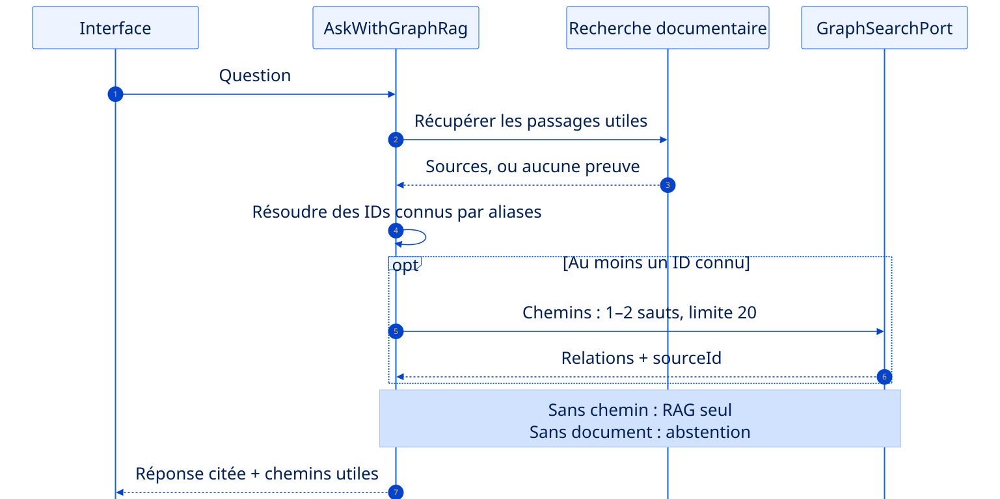

Relier les données.
Garder les preuves.
Une projection Neo4j reconstructible, puis un GraphRAG borné comparé honnêtement au RAG.
Le graphe enrichit la réponse sans devenir une vérité magique.
Reconstructible
Les assertions et scripts restent versionnés hors Neo4j.
Borné
Un à deux sauts et vingt relations maximum.
Honnête
GraphRAG n’est pas supposé gagner sur chaque question.
Un lien utile part d’un fait que l’on peut citer.
Le RAG S2 et le vocabulaire S4.
Réutiliser IDs métier et documents versionnés. Le jeu d’assertions musicothèque reste un secours.
Une projection de relations sourcées.
Un fichier d’assertions décrit qui relie quoi, par quel prédicat et avec quelle preuve.
Les mêmes questions avec et sans graphe.
Afficher les chemins utiles et les extraits ; mesurer aussi les cas où le graphe n’apporte rien.
Votre domaine S4 fournit les nœuds et le vocabulaire.
Lister les entités
Concepts dotés d’un identifiant métier stable.
Lister les relations
Verbes utiles pour répondre à des questions relationnelles.
Associer les preuves
Chaque relation factuelle possède une source et un extrait.
Installation complète
S5 réutilise le RAG, les contrats précédents et ajoute Neo4j.
Sans données prêtes : utilisez temporairement assertions.json.
Écrivez les relations avant de les charger.
evidence
Commencez par une seule relation vérifiable.
Écrire le fait et sa preuve
Créer
data/sources/assertions.json. Vérifier les IDs S4 et copier un extrait du corpus.Créer votre script de projection
Créer
graph.cypherou un script Python paramétré. Contrainte sur Entity.id, puis MERGE.Tester l’idempotence
Importer dans une base de TP vide, relever les comptes puis rejouer. Ne jamais vider une base partagée.
Construisez le graphe avec contraintes et MERGE.
Contrainte d’unicité
Un identifiant métier ne crée jamais deux nœuds.
MERGE
Le script peut être rejoué sans multiplier les relations.
Provenance
sourceId et evidence voyagent avec la relation.
Le graphe doit pouvoir être reconstruit.

Les assertions restent la source versionnée. Neo4j reçoit des paramètres et des MERGE, avec provenance. Flèche pleine : appel ; pointillés : retour.
Le modèle choisit une intention, jamais une requête arbitraire.
Autorisé
- requêtes paramétrées connues ;
- un ou deux sauts ;
- vingt relations maximum ;
- résultats avec provenance.
Interdit
- Cypher généré puis exécuté ;
- IDs internes Neo4j ;
- traversée non bornée ;
- résultat sans source.
Reliez les mots de la question aux IDs du domaine.
utilisateur
explicites
borné
Exact
Un nom ou alias reconnu retourne un ID connu.
Ambigu
Plusieurs candidats : demander ou conserver les options.
Absent
Aucun ID : retour explicite au RAG seul.
Résolvez les IDs avant d’ouvrir la traversée.
Définir un petit dictionnaire d’aliases
Associer les noms connus aux IDs métier. Si aucun nom ne correspond, conserver le RAG seul.
Écrire deux requêtes connues
Une version un saut et une version deux sauts. Paramétrer l’ID et limiter les résultats à vingt.
Tester trois issues
ID connu avec chemin, alias inconnu, chemin absent. Vérifier aussi sourceId et extrait sur les relations retournées.
Le graphe relie. Les documents prouvent.
vectorielle
d’entités
sourcés
citée
Les chemins enrichissent des preuves documentaires.

Les documents restent nécessaires. Sans ID ou chemin utile : RAG seul ; sans preuve documentaire : abstention. Flèche pleine : appel ; pointillés : retour.
RAG seul vs RAG + graphe : quatre questions, une conclusion.
Le graphe reste borné, sourcé et reconstructible.
Vous avez construit
- des assertions sourcées ;
- un script Cypher rejouable ;
- des traversées bornées ;
- un GraphRAG avec fallback.
À livrer
- les quatre comparaisons ;
- les limites observées ;
- les scripts de reconstruction ;
- les tests et le README.
À vous : des liens sourcés, un gain mesuré.
- Écrire les assertions
Reprendre les IDs S4 ; chaque relation garde sourceId et extrait vérifiable.
- Reconstruire la projection
Créer le script, contrainte et MERGE ; rejouer et comparer les comptes.
- Borner les parcours
Aliases vers IDs connus ; requêtes paramétrées à 1–2 sauts, vingt relations au plus.
- Comparer les réponses
Quatre questions RAG/GraphRAG ; afficher preuves, chemin utile, repli ou abstention.